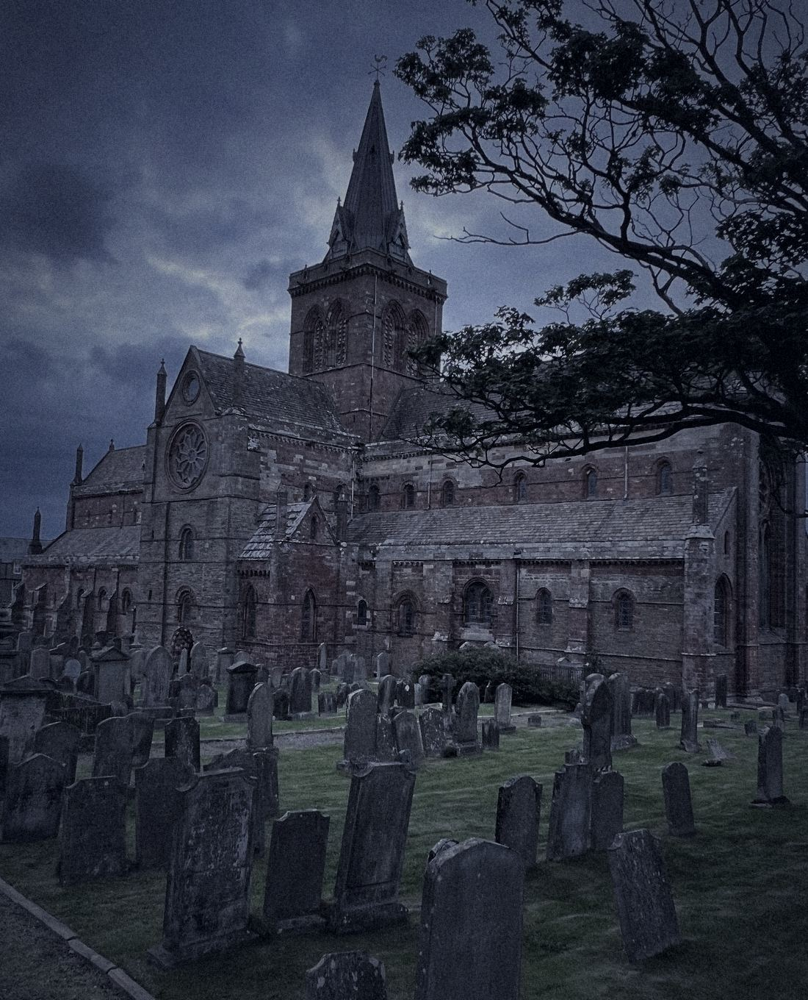
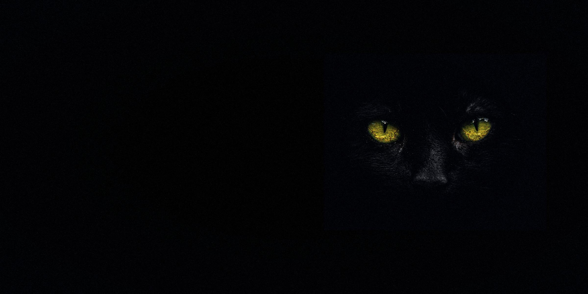
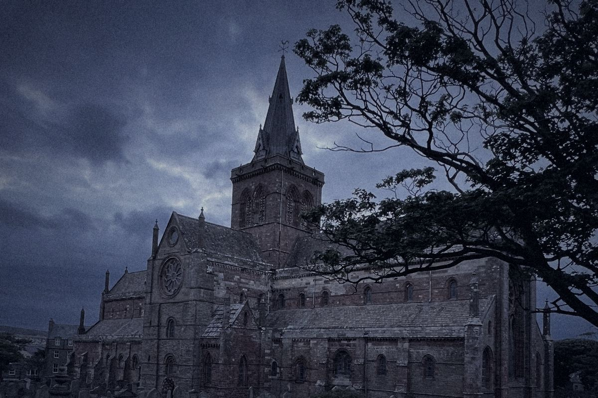
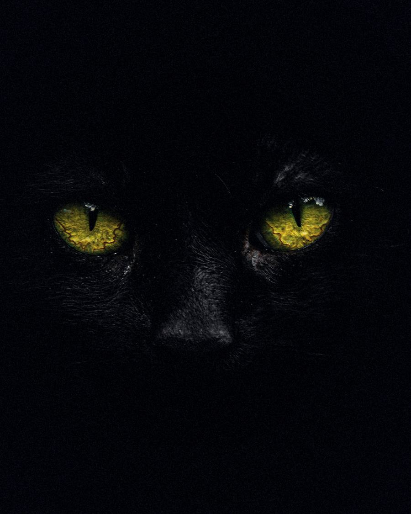
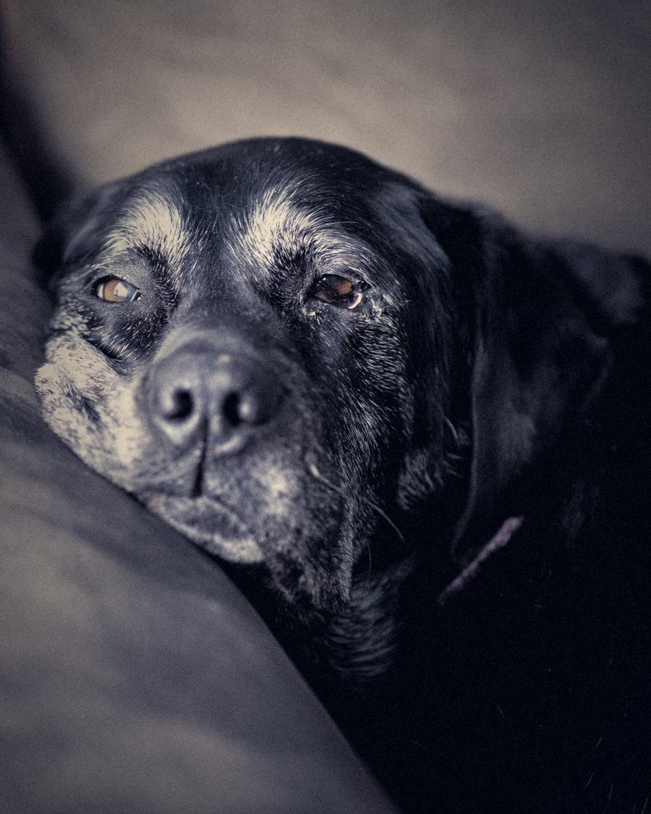

Donate
Give in person at the shop, or call 07491 250664 or email us and we will tell you how best to send a gift. If you pay UK tax, ask us whether your gift can be Gift Aided.

Kirkwall, OrkneyScottish charity SC050444
ODDBAR is a small, volunteer-run Scottish animal welfare charity with a charity shop on Albert Street, Kirkwall, and a shelter for forgotten dogs in Brasov, Romania. Some folk still say a black cat brings bad luck. We say a black cat, an old dog and a three-legged anything are the best luck going.

I Chapter one · No. 42
ODDBAR is short for Old, Disabled, Damaged and Black Animals Rescue, also known as ODD Animals Rescue. We are a volunteer-run Scottish charity based at 42 Albert Street, Kirkwall's main shopping street, and we have been on the Scottish Charity Register since 10 September 2020.
The charity was established in 2020 by a group of volunteers who shared a common vision: to help the most vulnerable and overlooked animals. Its founder and chairperson is Emilia Gheorghe.
“To promote the advancement of animal welfare and education of the general public in the subject of animal welfare.”
The charity shop, one-off donations and our fundraising pay for animal welfare, in Orkney and in Romania. Every label below tells you a little more about us. Go on, turn one over.
II Chapter two · Where the work happens
The shop is on Albert Street in Kirkwall. The forgotten dogs are in Brasov, Romania, at the shelter we took over in 2020. What the shop raises in Orkney helps look after them.
In autumn 2020 we took over “a rundown and overcrowded shelter” in Brasov, Romania, and 35 of its permanent residents: our “forgotten dogs”.
The rescue work in the community carried on. In July 2025 the shelter held 52 dogs, and 34 of them are permanent residents who cannot be rehomed, because of behaviour problems or a terminal illness. Not every dog or cat is a pet, but every one deserves a chance.
Done this year, 2024 to 2025
Next
“One cannot treat the symptoms instead of the cause.”
Our most valuable project is free neutering in the local community, run with our partner clinic, BetoVet. It covers dogs and cats with or without owners. We hope to take it to Beresti too, with Visul lui Lucian.
The Beresti project
£5,885
Beresti has no vets, no animal rescues and no spaying campaigns. Our biggest achievement this year was a grant of £5,885 to Visul lui Lucian, a newly founded charity registered in Romania (number 49714460). The money raised let it buy 10 acres of land outside Beresti, where it will build the first dog shelter in the area.
International volunteers
2 pairs of volunteers, three weeks each
We gave food and accommodation to two pairs of volunteers, who each spent three weeks at the shelter helping with the daily tasks, but mostly socialising, grooming and playing with the dogs.
Learning
Montessori School Brasov
This year we started an education programme with Montessori School Brasov, with visits from one of our ambassador dogs.

III Chapter three · Superstition, turned over
Old superstitions still follow black cats and dogs, and so does a high rate of ill-treatment and abandonment. We campaign for a more responsible attitude to dogs and cats, and that starts with a better reading of the omens.
No lucky crossings yet
IV Chapter four · The best ones
We campaign for old and disabled dogs and cats to be rehomed, and for the ones who can't be rehomed to have a permanent home for life. In Brasov, 34 of them already have one. Tap a portrait. These are borrowed photographs, not residents: simply the kind of animal we stand up for.
V Chapter five · Set in stone
Our aims are written into our governing document. Six of them, one for each stone. Tap a stone to read it.
Stone I of VI
Promote the welfare of animals, and help the public learn how to look after them.
VI Chapter six · Make your own luck
Most of what we do is paid for by the charity shop and by one-off donations, and the charity has no paid staff. Here is how to join in.
Give in person at the shop, or call 07491 250664 or email us and we will tell you how best to send a gift. If you pay UK tax, ask us whether your gift can be Gift Aided.
Every sale at 42 Albert Street helps pay for our work. Charity shops run on donated goods, so ask what the shop can take.
We are run entirely by volunteers, with no paid staff. If you have a few hours, pop into the shop or call us and ask how you could help.
Planning something to raise money for the lucky ones? Get in touch before you start and we will help you get it right.
Gifts to UK charities in a will are usually free of Inheritance Tax. If you would like to remember the lucky ones, speak to your solicitor and get in touch with us.
Next time someone says a black cat is bad luck, put them right. Old, wonky and black are the lucky ones.

The shop at No. 42
Our charity shop on Albert Street opened in June 2022, and with one-off donations its takings are our main source of funding. Every sale, and every bag of good things handed over the counter, goes towards animal welfare.

VII Chapter seven · Urgent help
In Orkney, ODDBAR is a charity shop and a pet foodbank, not an emergency or rescue service, and we cannot collect animals. In Scotland, the Scottish SPCA runs the animal helpline.
Scottish SPCA animal helpline
03000 999 999Open 9am to 5pm every day, for animals in urgent need of attention and to report neglect or cruelty, as listed on the Scottish SPCA website.
Scottish SPCA contact pageFor an injured animal, a local vet can also advise. Once the animal is safe, you are welcome to tell us about it at the shop or on 07491 250664.
VIII Chapter eight · On the record
The charity shop and one-off donations pay for most of our work, and every year the charity reports its income and spending to the Scottish Charity Regulator (OSCR). These are the figures on the public register.
Year ended 30 July 2025
The 2025 deficit of £4,075 was mainly the £5,885 grant to Visul lui Lucian for the Beresti shelter land.
Annual return received by OSCR on 29 July 2026. The register gives totals only; it does not break them down.
| Year ended | Income | Spending |
|---|---|---|
| 30 July 2021 | £46,112 | £45,718 |
| 30 July 2022 | £66,731 | £61,493 |
| 30 July 2023 | £72,921 | £72,850 |
| 30 July 2024 | £66,987 | £65,540 |
| 30 July 2025 | £80,866 | £84,941 |
Source: Scottish Charity Register (OSCR), downloaded 31 October 2026.
IX Chapter nine · Questions

Yes, sometimes. Our main focus is the dogs at our shelter in Romania who cannot be adopted, but we also run a rehabilitation and rehoming program, and this year we rehomed 3 dogs and 1 cat from Romania to the UK. We do not list animals on this website. If you would like to give one a home, call 07491 250664 or ask at the shop.
We run a shelter in Brasov that we took over in 2020. In July 2025 it held 52 dogs, 34 of them permanent residents. We also run a Free Neutering Campaign with BetoVet, and this year we gave a grant to Visul lui Lucian towards land for the first dog shelter near Beresti. See From Kirkwall to Brasov.
We are not an emergency or rescue service. Call the Scottish SPCA animal helpline on 03000 999 999 (9am to 5pm every day), or see Found an animal in trouble? above.
Opening hours are not listed on this website. Look in when you are passing on Albert Street, or call 07491 250664 before making a special trip.
Ask at the counter what the shop can take and when to bring it in, or call 07491 250664 and we will tell you.
In person at the shop, or call or email us and we will tell you how best to send it. If you pay UK tax, ask us whether your gift can be Gift Aided.
Please do. We are run entirely by volunteers, with no paid staff. Pop into the shop or call us and ask how you could help.
Yes. Old, Disabled, Damaged and Black Animals Rescue is a Scottish Charitable Incorporated Organisation, Scottish Charity Number SC050444, registered with the Scottish Charity Regulator (OSCR) since 10 September 2020. You can see our entry on the register.
Call 07491 250664. You can also call in or write to us at the shop, 42 Albert Street, Kirkwall, Orkney KW15 1HQ.
Call in, ring, email or write: the shop door on Albert Street is where it all starts. Opening hours are not listed here, so call before making a special trip. Turn the sign over to see how, and ring the bell to wake the shop cat.
Open · Call in person
Pop into the shop to browse and buy, say thank you, ask about volunteering, or ask how best to give.
Origin Labs introduces ODDBAR to supporters across the crypto community, so the misfits find friends far beyond Orkney.
Neutering partner: BetoVet veterinary clinic, Brașov
Registered with the Scottish Charity Regulator (OSCR), SC050444